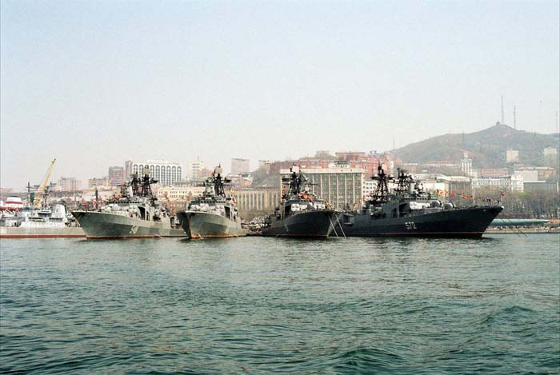
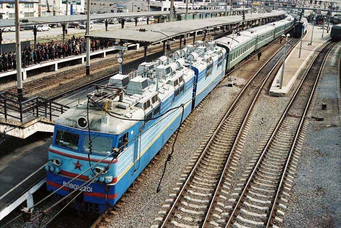
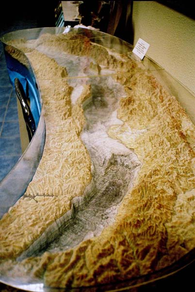

| 山の自然学研究会 バイカル湖巡検イメージアルバム ２ |
| ｱﾑｰﾙ河 |
| ｲﾙｸｰﾂｸ駅 |
| ｲﾙｸｰﾂｸ市内-2 |
| ｲﾙｸｰﾂｸ市内-3 |
|  |
| ｳﾗｼﾞｵｽﾄｸの港（撮影：船橋様） |
| ｳﾗｼﾞｵｽﾄｸ港 |
|  |
| ｼﾍﾞﾘｱ鉄道-1（撮影：船橋様） |
 |
| ｼﾍﾞﾘｱ鉄道-2（撮影：船橋様） |
| ｼﾍﾞﾘｱ鉄道の始発駅ｳﾗｼﾞｵｽﾄｸ駅 |
| ｼﾍﾞﾘｱ鉄道の写真から-2（撮影：船橋様） |
| ｼﾍﾞﾘｱ鉄道の車窓から-1（撮影：船橋様） |
 |
| ﾀﾘﾂｨ木造建築博物館内 |
|  |
| ﾊﾞｲｶﾙ湖ｼﾞｵﾗﾏ（撮影：船橋様） |
| ﾊﾞｲｶﾙ湖近くの村ﾘｽﾄｳﾞｨﾔﾝｶ |
| ﾊﾞｲｶﾙ湖地形図（撮影：船橋様） |
| ﾊﾞｲｶﾙ湖特産魚「ｵｰﾑﾘ」の燻製 |
| ﾊﾊﾞﾛﾌｽｸ市内-1 |
| ﾊﾊﾞﾛﾌｽｸ市内とｱﾑｰﾙ河 |